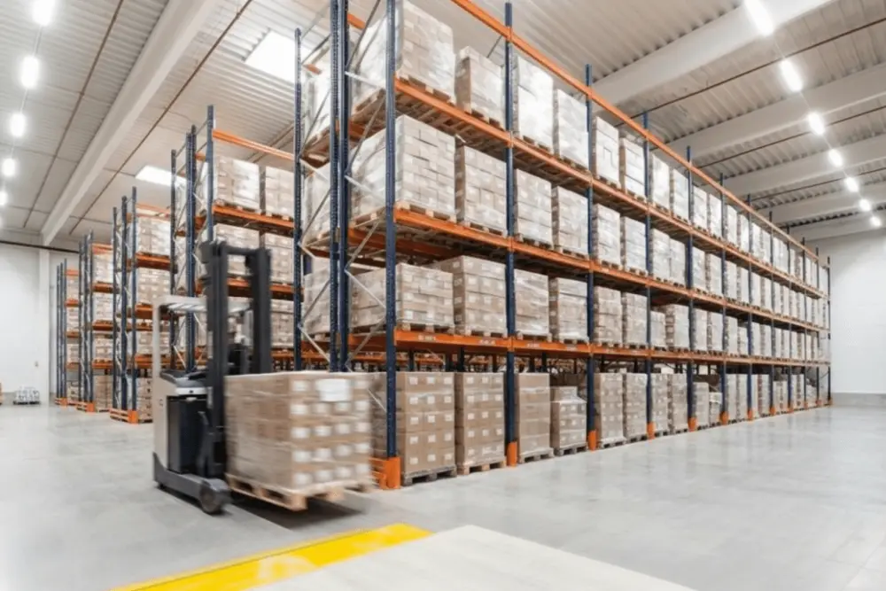
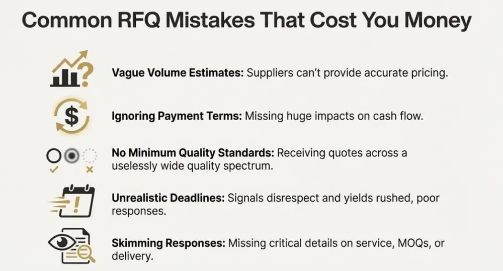

文章 / 飲品配方與資訊
RFQ Template for Bubble Tea Ingredients: A Copy-Paste Ready Guide for Buyers
這篇是英文原文，尚未完成繁體中文翻譯。中文選單與相關商品連結不會切回英文介面。
查看英文原文（尚未翻譯）
“We were hemorrhaging money on bubble tea ingredients,” the COO of a 47-unit West Coast chain told me last quarter. “Different franchisees were ordering from different suppliers, paying wildly different prices, getting inconsistent quality. We had no visibility into what we were actually spending.”
Their solution? A standardized RFQ process that consolidated purchasing power, improved cost transparency, and created supplier accountability. Within six months, they’d reduced ingredient costs by 22% while improving quality consistency across all locations.
That conversation reminded me why I’ve become obsessed with procurement operations lately. After interviewing dozens of QSR operators and supply chain directors for QSR Uncut, I’ve realized something: the operators winning on unit economics aren’t just negotiating harder—they’re negotiating smarter. And it starts with how they structure their supplier requests.
Why RFQs Matter More Than Most Operators Realize
Here’s the uncomfortable reality: most bubble tea operators approach supplier sourcing backwards. They call a supplier, ask some vague questions about products and pricing, maybe request samples, then make purchasing decisions based on incomplete information. Three months later, they’re dealing with quality issues, pricing disputes, or delivery failures that could’ve been prevented with better upfront diligence.
A properly structured RFQ (Request for Quotation) does three things simultaneously. It forces you to clarify exactly what you need—specifications, volumes, delivery requirements. It creates apples-to-apples comparisons between suppliers, eliminating the confusion that comes from comparing different package sizes, payment terms, or service levels. And it establishes clear expectations from day one, reducing disputes and misunderstandings down the road.
Jim Patterson, VP of Supply Chain for a Midwest franchising company, put it well: “An RFQ is your first test of whether a supplier can follow instructions, meet deadlines, and provide detailed information. If they can’t handle the RFQ process professionally, they definitely can’t handle ongoing operations.”
The Core RFQ Template: Start Here
Let me give you a copy-paste ready template that covers the essentials. You can customize this based on your specific needs, but this structure has been validated by procurement directors across multiple concepts.
SUBJECT: Request for Quotation - Bubble Tea Ingredients for [Company Name]
Dear [Supplier Name],
[Company Name] is seeking quotations for bubble tea ingredients to support our [X] locations across [geographic area]. We're conducting a comprehensive supplier evaluation and request your formal quotation for the items specified below.
COMPANY OVERVIEW:
- Concept: [Brief description]
- Locations: [Number and geography]
- Current monthly volume: [Estimated usage]
- Projected growth: [Expansion plans if relevant]
QUOTATION DEADLINE: [Date - typically 2-3 weeks out]
REQUESTED RESPONSE DATE: [Date]
DECISION TIMELINE: [When you'll make supplier selection]
Please provide detailed information for each section below.
---
SECTION 1: PRODUCT SPECIFICATIONS & PRICING
For each product category, please provide:
- Product name and SKU
- Package size and format
- Unit price (per kg, liter, or package)
- Volume tier pricing (if applicable)
- Minimum order quantities
- Lead time from order to delivery
TAPIOCA PEARLS:
[ ] Black tapioca pearls - [specify size, cooking time preference]
[ ] Brown sugar tapioca pearls
[ ] Colored/flavored tapioca pearls (specify flavors needed)
[ ] Instant/ready-to-use pearls
[ ] Custom specifications: _______________
POWDERED INGREDIENTS:
[ ] Taro powder
[ ] Matcha powder
[ ] Honeydew powder
[ ] Thai tea powder
[ ] [Other flavors: _______________]
SYRUPS:
[ ] Brown sugar syrup
[ ] Fruit syrups (specify flavors)
[ ] Sugar syrup (simple syrup)
[ ] Custom flavor syrups: _______________
TOPPINGS:
[ ] Popping boba (specify flavors)
[ ] Jelly cubes (specify types)
[ ] Puddings (specify types)
[ ] Other toppings: _______________
TEA BASES:
[ ] Black tea (specify origin preference)
[ ] Green tea (specify origin preference)
[ ] Oolong tea
[ ] Custom blends: _______________
---
SECTION 2: QUALITY & CERTIFICATIONS
Please provide documentation for:
- Food safety certifications (FSSC 22000, BRC, HACCP, etc.)
- Product specifications sheets for each item
- Allergen information and labeling
- Country of origin for each product
- Shelf life and storage requirements
- Quality control procedures
- Organic, kosher, halal certifications (if applicable)
Attach: Certification documents, spec sheets, test reports
---
SECTION 3: SUPPLY CHAIN & LOGISTICS
Delivery & Logistics:
- Warehouse/distribution locations
- Delivery frequency options (weekly, bi-weekly, monthly)
- Minimum order value for free shipping
- Freight costs and policies
- Average lead time from order placement to delivery
- Expedited shipping options and costs
- Order cutoff times
Inventory & Ordering:
- Ordering platforms (online portal, EDI, phone, email)
- Order tracking capabilities
- Inventory management support (VMI available?)
- Backorder policies
- Return/exchange policies for damaged/defective products
---
SECTION 4: BUSINESS TERMS
Pricing Terms:
- Payment terms (Net 30, Net 60, COD, etc.)
- Volume discount structure
- Contract length and pricing guarantees
- Price adjustment policies (frequency, notification period)
- Promotional allowances or marketing support
- Rebate programs
Service & Support:
- Dedicated account manager? (Y/N)
- Technical support availability (product training, recipe development)
- Sample provision policies
- Product development/customization capabilities
- Response time commitment for inquiries
---
SECTION 5: SUSTAINABILITY & COMPLIANCE
Please describe your:
- Sustainable sourcing practices
- Packaging recyclability/sustainability initiatives
- Carbon footprint reduction programs
- Ethical labor practices and certifications
- Traceability systems
---
SECTION 6: REFERENCES
Please provide:
- 3 current customer references (similar business type/size)
Include: Company name, contact person, phone/email, years working together
- Brief case study or success story (if available)
---
SECTION 7: ADDITIONAL INFORMATION
Please include:
- Company overview and years in business
- Manufacturing facility locations
- R&D capabilities
- Any value-added services
- Why you're the best fit for our needs
---
SUBMISSION REQUIREMENTS:
- Submit via [email/portal] by [deadline]
- Include all requested documentation
- Use this RFQ document as response template when possible
- Questions due by [date 1 week before deadline]
EVALUATION CRITERIA:
Your quotation will be evaluated based on:
- Pricing competitiveness (30%)
- Product quality and consistency (25%)
- Service capabilities and responsiveness (20%)
- Supply chain reliability (15%)
- References and track record (10%)
Thank you for your interest in partnering with [Company Name]. We look forward to reviewing your proposal.
Best regards,
[Your Name]
[Title]
[Company]
[Contact Information]
Strategic Variations for Different Use Cases
Not every RFQ needs all these sections. Here’s how to adapt based on your situation.
For New Store Openings: If you’re just opening a new bubble tea shop, simplify the template. Focus on product specifications, pricing, and minimum orders. You probably don’t need complex volume tier pricing or VMI programs yet. But do ask about startup support, training, and recipe development assistance—these services can accelerate your launch significantly.
For Multi-Unit Operations: Add sections on territory exclusivity, franchisee ordering support, and consolidated billing. Include questions about regional distribution capabilities and whether the supplier can support store-level or corporate-level ordering. You’ll also want detailed information about their ability to scale with your growth.
For Custom Product Development: Expand the customization section significantly. Ask about R&D capabilities, minimum order quantities for custom formulations, intellectual property ownership, exclusivity periods, and development timelines. Request examples of previous custom projects and client testimonials specifically about innovation work.
The Quick-Hit RFQ for Initial Screening
Sometimes you need something faster. Here’s a condensed version for preliminary supplier screening:
QUICK RFQ - Bubble Tea Ingredients
COMPANY: [Your business name]
MONTHLY VOLUME: [Estimated usage]
NEEDED BY: [Date]
Please quote the following with pricing for quantities shown:
1. Black Tapioca Pearls
- Quantity: ___ kg/month
- Package size: ___
- Price per unit: ___
- Lead time: ___
2. [Additional products following same format]
Required information:
- MOQ (minimum order quantity)
- Payment terms
- Delivery time
- Available certifications
- 2 customer references
Deadline: [Date]
Questions: [Your contact info]
This is preliminary pricing only. Detailed specifications and terms to follow for qualified suppliers.
This simplified version lets you quickly eliminate suppliers who can’t meet basic requirements before investing time in detailed discussions.
Category-Specific Deep-Dive Template
For critical categories where quality variation significantly impacts your product, use this enhanced specification format:
DETAILED PRODUCT SPECIFICATION - TAPIOCA PEARLS
Product Category: Black Tapioca Pearls
Estimated Monthly Volume: [X] kg
Required Delivery Frequency: [Weekly/Bi-weekly]
PHYSICAL SPECIFICATIONS:
- Pearl diameter: __ mm (specify tolerance range)
- Color: [Specify Pantone or visual reference]
- Shape: [Perfect sphere / acceptable variation]
- Uniformity requirements: [% tolerance for size variation]
COOKING SPECIFICATIONS:
- Cooking time: __ minutes (optimal range)
- Water ratio: [Specify]
- Texture after cooking: [QQ texture, specific chewiness]
- Holding time after cooking: [Minimum __ hours before texture degradation]
- Refrigeration stability: [Requirements]
PERFORMANCE REQUIREMENTS:
- Shelf life: [Minimum __ months]
- Storage conditions: [Temperature, humidity requirements]
- No off-flavors or odors
- Consistent batch-to-batch quality
- [Specific performance metrics for your application]
INGREDIENT REQUIREMENTS:
- Primary ingredients: [List acceptable ingredients]
- Excluded ingredients: [List unacceptable ingredients]
- Allergen declarations required
- Clean label preferred? [Y/N]
- Specific certifications needed: [Organic, Non-GMO, etc.]
DOCUMENTATION REQUIRED:
- COA (Certificate of Analysis) for each batch
- Product specification sheet
- Cooking instructions
- Storage and handling guidelines
TESTING:
- Sample quantity needed: [X] kg for testing
- Sample delivery by: [Date]
- Testing period: [X] weeks
Best Practices from High-Performing Operators
After reviewing RFQ processes with operators across 150+ concepts, certain patterns separate the sophisticated buyers from the rest.
Send RFQs to 5-7 suppliers, not 2-3. More competitive pressure yields better pricing and terms. But don’t send to 15+ suppliers—managing that many responses becomes unwieldy and signals you’re not serious about partnership.
Build in time for clarification questions. Set a questions deadline one week before proposal submission. This ensures all suppliers quote based on the same understanding of requirements, making comparisons fair and meaningful.
Use identical RFQ language for all suppliers. Don’t customize RFQs per supplier—you’ll create comparison problems. If suppliers request clarification or modifications, share those with all participants to maintain fairness.
Create a scoring matrix before receiving quotes. Decide how you’ll weight factors like price, quality, service, and reliability before seeing proposals. This prevents unconscious bias and ensures consistent evaluation. Professional supplier services should be evaluated systematically, not emotionally.
Request samples alongside quotations. Have suppliers send representative samples of quoted products. Test them in your actual preparation process. Nothing beats real-world validation of whether tapioca pearls cook consistently or powders dissolve properly.
Research from the Institute of Supply Management shows that organizations using structured RFQ processes achieve 15-20% better pricing outcomes and 30% fewer supplier-related quality issues compared to informal sourcing approaches.


Common RFQ Mistakes That Cost Money
I’ve seen enough unsuccessful RFQs to know what doesn’t work. Avoid these pitfalls:
Mistake 1: Vague Volume Estimates. Saying “we need tapioca pearls” without volume estimates means suppliers can’t provide accurate pricing or assess if they can serve you. Be specific about current usage and projected growth.
Mistake 2: Ignoring Payment Terms. Focusing only on unit price while ignoring payment terms misses huge financial implications. Net 60 terms versus COD can dramatically affect cash flow and effective cost.
Mistake 3: No Minimum Quality Standards. If you don’t specify quality requirements upfront, you’ll receive quotes spanning the quality spectrum. Setting clear standards eliminates unsuitable suppliers early.
Mistake 4: Unrealistic Deadlines. Giving suppliers 48 hours to respond to a complex RFQ signals disrespect and produces rushed, incomplete responses. Allow 2-3 weeks minimum for comprehensive RFQs.
Mistake 5: Not Reading Responses Carefully. Many operators skim RFQ responses, focusing only on price. Missing key details in service terms, MOQs, or delivery requirements leads to problems later. Read thoroughly, compare systematically, and dig into differences.


What This Means for Your Operation
Whether you’re sourcing for a single location or coordinating across 50+ units, a professional RFQ process delivers quantifiable benefits. It saves money through better pricing and terms. It reduces risk by identifying reliable suppliers before commitment. It saves time by eliminating unsuitable suppliers early. And it establishes clear expectations that prevent future disputes.
The operators I admire most treat supplier sourcing as a strategic process, not a tactical transaction. They use RFQs to find partners, not just vendors. And they structure those RFQs to evaluate what actually matters to their operation’s success—not just checking boxes.
Start with the templates I’ve provided here, customize them for your specific needs, and commit to following through consistently. Your CFO will thank you when ingredient costs drop. Your operations team will thank you when quality becomes consistent. And you’ll thank yourself when supplier issues become exceptions rather than weekly fires to fight.
FAQ
An RFQ is a formal quotation request that standardizes comparisons, clarifies specifications, and establishes supplier accountability to prevent pricing disputes
Review certifications, production capacity, delivery records, quality consistency, payment terms, and request sample testing with client references
MOQs vary by product—powders typically start at 20-50kg, syrups and toppings depend on packaging specs; clarify in your RFQ
Create a scoring matrix weighting price, quality, service, delivery, and payment terms; ensure apples-to-apples comparisons beyond unit price
Standardize specifications, consolidate order volumes for tiered pricing, request regional distribution support, and establish corporate billing (22% savings)
Sources & References
- Institute for Supply Management — Procurement best practices and supply chain management research
- McKinsey & Company – Supply Chain — Strategic sourcing and supplier evaluation frameworks
- Harvard Business Review — Negotiation strategy and supplier relationship management
- Deloitte Food & Beverage — Industry-specific procurement insights
About the Author
Thomas Liu is a Supply Chain Strategist at YenChuan, specializing in procurement operations and multi-unit supply chain optimization. With 14 years of experience helping QSR operators streamline ingredient sourcing across international markets, he brings practical insights into what makes supplier relationships work at scale. Thomas believes the best supplier partnerships start with clarity—clear expectations, clear communication, and clear mutual value—and that a well-structured RFQ is the foundation for all three.
Connect with Thomas on LinkedIn.
Ready to Find Your Ideal Ingredient Partner?
A great RFQ process starts with knowing what questions to ask—but it succeeds when you partner with suppliers who can actually deliver on their promises. YenChuan has been responding to RFQs from operators worldwide since 1988, and we’ve built our business around the qualities that matter most: consistent quality, reliable delivery, transparent pricing, and genuine partnership.
We understand the RFQ process from both sides. Our team can help you refine your sourcing requirements, provide detailed technical specifications, and deliver the comprehensive information you need to make confident supplier decisions. From FAQ clarifications to sample requests, we’re structured to support your evaluation process professionally.
Ready to send us your RFQ? Contact our team →